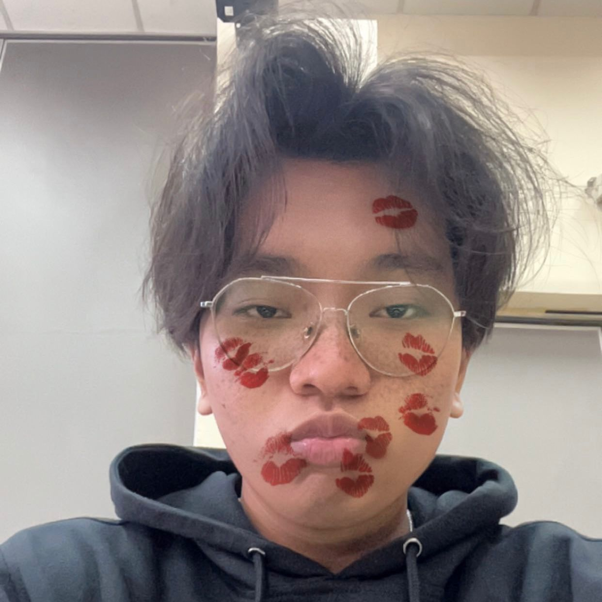

UTS-1 All About Me

Halo halo! Perkenalkan, saya Riantama Putra, mahasiswa Program Studi Sistem dan Teknologi Informasi, Institut Teknologi Bandung, Angkatan 2024. Melalui tugas All About Me ini, saya ingin mengenali diri saya lebih dalam, bukan hanya sebagai mahasiswa, tetapi juga sebagai pribadi yang sedang belajar memahami makna komunikasi, baik dengan diri sendiri maupun dengan orang lain.
Tentang Saya
Saya melihat diri saya sebagai seseorang yang rasional tetapi tetap hangat. Saya terbiasa berpikir dengan logika, namun tetap menghargai sisi emosional dalam setiap interaksi. Dalam percakapan, saya lebih suka mendengarkan terlebih dahulu dan mencoba memahami konteks sebelum menanggapi. Namun, saya juga menyadari bahwa terkadang saya terlalu berhati-hati, seolah takut dinilai salah. Dari sana saya belajar bahwa komunikasi bukan soal menjadi sempurna, melainkan soal berani hadir apa adanya dan mau memahami sebelum dipahami.
Saya percaya setiap orang memiliki cara unik untuk mengekspresikan diri. Bagi saya, berbicara adalah proses untuk jujur terhadap diri sendiri, dan mendengarkan adalah cara untuk memahami dunia dengan lebih luas.
Nilai dan Prinsip yang Membentuk Saya
Dalam hidup, saya berpegang pada tiga hal: kejujuran, empati, dan tanggung jawab. Kejujuran membuat saya bisa hidup tanpa berpura-pura. Empati membantu saya memahami sudut pandang orang lain tanpa langsung menghakimi. Dan tanggung jawab mengingatkan saya bahwa setiap kata yang diucapkan membawa konsekuensi.
Dari perkuliahan ini, saya memahami bahwa nilai-nilai ini menjadi dasar dalam self-concept dan self-awareness. Mengetahui siapa diri saya dan apa yang saya hargai membantu saya berkomunikasi dengan lebih sadar, terbuka, dan penuh tujuan. Saya juga belajar bahwa mendengarkan dengan niat tulus dapat menciptakan hubungan yang lebih bermakna dibanding sekadar berbicara panjang lebar.
Cara Saya Melihat Dunia dan Orang Lain
Saya melihat dunia sebagai ruang untuk belajar. Tidak semua pelajaran datang dari ruang kuliah, sebagian justru hadir lewat kesalahpahaman, kegagalan, atau percakapan sederhana. Setiap kali saya berinteraksi, saya berusaha untuk tidak hanya memahami kata-kata, tetapi juga perasaan dan makna yang tersirat di baliknya.
Melalui teori komunikasi interpersonal, saya menyadari bahwa persepsi sering kali menjadi sumber kesalahpahaman. Konflik tidak selalu muncul karena niat buruk, tetapi karena perbedaan cara pandang. Karena itu, saya mencoba menerapkan prinsip “clarify before judge” yang memiliki arti mencari makna sebelum menyimpulkan. Pemahaman tentang persepsi ini membantu saya mengurangi prasangka dan memperkuat keterampilan empatik dalam berinteraksi.
Kepribadian dan Kehidupan Sehari-hari
Secara kepribadian, saya bisa dibilang cukup seimbang antara introvert dan ekstrovert. Saya nyaman bekerja sendiri, tetapi juga menikmati waktu bersama teman-teman yang punya energi positif. Di luar akademik, saya menikmati hal-hal sederhana seperti mendengarkan musik, bermain game, atau sekadar merenung sendiri. Momen-momen itu membantu saya memahami diri saya dan mengatur emosi dengan lebih baik.
Saya belajar dari topik komunikasi nonverbal bahwa keheningan juga bisa berbicara. Cara kita menatap, tersenyum, atau menunduk dapat menyampaikan pesan tanpa kata-kata. Karena itu, saya mulai lebih sadar terhadap bahasa tubuh saya dan mencoba menyesuaikannya agar selaras dengan pesan yang ingin saya sampaikan.
Refleksi atas Diri dan Komunikasi
Selama mengikuti perkuliahan ini, saya belajar bahwa komunikasi sejati berawal dari kesadaran diri (self-awareness). Cara saya menilai diri sendiri ternyata memengaruhi cara saya mendengar, memahami, dan berbicara dengan orang lain. Saya belajar untuk tidak mencari penerimaan dari semua orang (approval seeking), tetapi untuk berbicara dengan niat tulus dan menghargai perbedaan perspektif.
Saya juga mulai menerapkan affirmation, yaitu berbicara baik kepada diri sendiri. Satu kalimat positif kadang cukup untuk menenangkan pikiran dan membantu saya menghadapi situasi sulit dengan kepala dingin. Dari situ saya belajar bahwa komunikasi intrapersonal adalah pondasi dari hubungan interpersonal yang sehat.
Dari materi Listening saya menyadari pentingnya menjadi pendengar aktif. Saya berusaha lebih fokus saat orang lain berbicara, memparafrasekan untuk memastikan pemahaman saya benar, dan menghindari kebiasaan pseudolistening. Dengan mendengar sepenuhnya, saya bukan hanya memahami pesan, tetapi juga menghargai manusia di baliknya.
Harapan dan Tujuan ke Depan
Saya ingin menjadi pribadi yang tidak hanya cerdas secara teknis, tetapi juga bijak dalam berinteraksi. Saya ingin kemampuan komunikasi saya tidak berhenti pada penyampaian pesan, melainkan mampu membangun kepercayaan dan kerja sama. Saya berharap dapat menciptakan lingkungan yang terbuka, suportif, dan saling memahami, baik dalam konteks akademik maupun profesional.
Bagi saya, komunikasi yang baik adalah cerminan kematangan diri. All About Me bukan sekadar tugas, tetapi proses belajar untuk tumbuh menjadi pribadi yang memahami diri sendiri, mampu mendengarkan, dan membawa nilai positif dalam setiap percakapan.
“Menjadi pendengar yang baik kadang lebih sulit daripada menjadi pembicara yang hebat. Tetapi di sanalah kita belajar, bahwa memahami orang lain selalu dimulai dari keberanian untuk mendengarkan.”